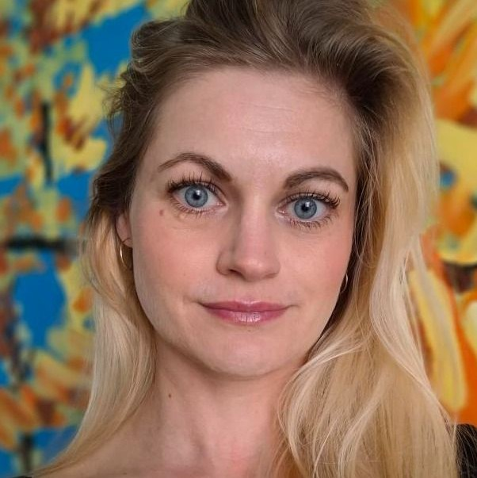

O mně
Jsem psycholožka s 10ti letou praxí. V terapii se orientuji psychodynamicky, aktuálně jsem frekventantkou výcviku skupinové psychoanalýzy. Mým pracovním nástrojem je klasický terapeutický rozhovor. Přijímám klienty od 16ti let.
V terapii vytvářím klidný, důvěrný a otevřený prostor. Můžete svobodně mluvit o tom, co prožíváte, společně zkusíme hledat nové způsoby, jak náročné situace zvládat.
Můžete se na mě obrátit, pokud se trápíte s úzkostmi, strachy, depresí, poruchami spánku, psychosomatickými potížemi, nízkým sebevědomím, nadměrným stresem, přetížením/vyhořením, jste v životní / vztahové / pracovní krizi.
Cena sezení:
1500/ 50 min
možnost domluvit se i na online terapii
Omluvy ze sezení prosím 48h před ním, jinak je nutné uhradit plnou částku.
Kontakt:
Objednat se můžete přes email borakova.martina@seznam.cz
nebo
tel.: 777 553 772, pokud telefon nezvednu, zavolám vám zpět.
Ambulance Moje já, zvonek 1. patro
Adresa: Hollarovo náměstí 11, Praha 3, metro Želivského.